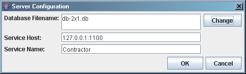

Contractors User's Guide
Introduction & Index
This short document is an User's Guide to the Contractors application. This
document describes how to install, start and use this application as well as
how to properly configure each application mode. Currently Contractors
application supports following modes:
- Standalone (alone) - application can work locally in this mode
which means that no networking is needed and all data are stored in local disk.
- Network (network) - in this mode application connects to the server
specified in configuration in order to retrieve required data. NOTE:
RMI server must be started prior to the application.
- Server (server) - in this mode simple GUI with buttons for server
management (Start, Stop) starts.
This document is divided into the following sections:
-
Installation & Running the Application - this
section describes installation and running application.
-
Navigation - this section describes how to
use the application. It is divided into the following subsections:
-
Configuration - this section describes how to
configure each application mode, i.e.:
-
Troubleshooting - this section describes common
problems user can encounter during using Contractors application and answers
how to deal with those problems:
Return to top
Installation & Running the Application
In order to start Contractors application you have to follow these steps:
- Create directory where the application will be working (e.g.
C:\Contractors).
- Create
docs/ subdirectory in the previously created directory (e.g
C:\Contractors\docs).
- Copy following files into previously created directory (
C:\Contractors
in this case):
runme.jar - compiled application archive,db-2x1.db - Contractors' database,suncertify.properties - application's configuration,
- Copy the following files into previously created
docs directory:
userguide.html - this user's guide HTML file,img/ - copy this directory with all subdirectories
- this directory contains images for User's Guide.
Now application is ready to run.
- Start RMI registry (it is located in your JRE
\bin directory -
rmiregistry.exe file). You are not obliged to start RMI registry -
Contractors application will start it automatically in Server Mode.
- Start Contractors application in specified mode typing following command:
java -jar runme.jar [<mode>]
If you don't specify application's mode it will automatically start in the Network Mode.
Contractors application should start up without any problems - if not please investigate
the Troubleshooting section of this guide.
For more information concerning running RMI applications please refer to RMI tutorial:
http://java.sun.com/docs/books/tutorial/rmi/
(especially Compiling and Running the Example section).
Return to top
Navigation
Navigation of Contractors application was designed to be intuitive and straightforward. While
using it you may encounter two different main windows: Standalone/Network and Server. These two
types are described in details in the following subsections.
Standalone & Network Modes
Main window in the Standalone and Network modes looks like this:
It is divided into four main parts (from top left to bottom right):
- Menu - consists of all possible options that application enables in the current mode - see
Menus and Buttons subsection for details;
- Filter tree - you can quickly search for required data by selecting appropriate tree leaf;
- Data table - contractors' data from database are displayed in this widget (regarding applied filter).
This table allows user to sort data against required column - just press column header to sort data
against it - if you press again data will sort in the opposite direction;
- Buttons - buttons that allow user to manipulate contractors' data.
Sorting tree is a kind of "quick-search" for name and location fields. For example,
if you want to display only those contractors who are located in Digitopolis just expand
LOCATION node and select Digitopolis leaf:
If you want to display only those contractors who are named Moore Power Tool Ya and located in
Atlantis just expand NAME and LOCATION nodes and select Moore Power Tool Ya leaf,
press Ctrl key and then select Atlantis leaf:
Filter tree is automatically updated after each database operation committed by the user.
Menus
File:
- Exit - exits the application and ends current session.
Configuration:
- Standalone Mode - opens standalone mode configuration dialog.
- Network Mode - opens network mode configuration dialog.
Contractor:
- Add New Contractor - opens dialog that allows user to add new contractor into the database.
- Edit Selected Contractor - opens dialog that allows user to modify data of selected contractor
in the database.
- Delete Selected Contractor - allows user to delete selected contractor from the database.
- Book Selected Contractor - opens dialog that allows user to book selected contractor for
any owner.
- Free Selected Contractor - allows user to free selected contractor i.e. make it available
for booking.
Search:
- Search Contractors - opens dialog that allows user to specify filter
- Show All Contractors (Resets Filter)
Help:
- Help Contents - displays this help.
Adding New Contractors
If you want to add new contractor to the database press Add button in the
main window or select Add New Contractor from Contractor menu or press
Shift + Insert key combination. Dialog window for adding new contractor
will appear at once - see image below:
You can enter new contractor's data via this window and add it to the database
by pressing OK button. If you encounter any problem please refer to
Troubleshooting section in this document. If you don't
know what each field in this dialog window means, here is a short description:
- Name - The name of the subcontractor this record relates to.
- Location - The locality in which this contractor works.
- Specialties - List of types of work this contractor can perform.
- Size - Number of staff in organization size.
- Rate per hour - Charge per hour for the subcontractor.
- Availability - Indicate if edited contractor is available for booking
or booked for any customer. If you choose Booked for option you must provide
the id value of the customer who has booked this contractor.
If you want to change specialties list press Change button below
Specialties label - dialog window to change specialties list will appear
at once:
If you want to add new specialty select one you want and press Add button.
If you cannot find specialty you want to add in the list just type its name by
yourself and press Add button. If you exceed maximum number of specialties
information dialog with relevant message will appear:
If you want to delete specialty from the list just select it in the list (not in
the combo box) and press Delete button.
When you finish selecting specialties press OK button in order to get back
to contractor's dialog window.
Editing Contractors
If you want to edit contractor's data select one you are interested in and press
Edit button in the main window or select Edit Selected Contractor
from Contractor menu. Dialog window for editing contractor's data will
appear immediately - see image below:
Navigation is the same as with adding new contractor. In case of any problem please
refer to Troubleshooting section in this document.
Deleting Contractors
If you want to delete contractor select one you are interested in and press
Delete button in the main window or select Delete Selected Contractor
from Contractor menu or press Shift + Delete key combination. System
will ask you to confirm deletion and confirmation dialog will appear on the screen:
In case of any problem please refer to Troubleshooting
section in this document.
Booking/Freeing Contractors
If you want to book contractor for concrete customer you can do this in two
different ways. One way is to select Booked for option and type ID of
customer that books contractor while editing contractor's data (see Editing
Contractors). Second way is to press Book button in the main window or
select Book Selected Contractor from Contractor menu. Dialog window for
booking contractor will appear immediately:
In this window the only thing you can do is typing ID of customer that books selected
contractor. If you press OK button current contractor will be booked for
given owner.
If you want to free contractor you can do this in two different ways. One way is to
select Available option while editing contractor's data (see Editing
Contractors). Second way is to press Free button in the main window or
select Free Selected Contractor from Contractor menu. If selected contractor
is booked confirmation dialog will appear:
If you press Yes selected contractor will be available for booking. If selected
contractor is already available for booking you will see following information:

Searching for Contractors
In order to display only those contractors that match your criteria press Search
button in the main window or select Search Contractors from Search
menu or press Ctrl + F key combination. Dialog window for typing desired
criteria will appear at once - see image below:
If you want for example to display all contractors whose name starts with Company
you have to type Company text in the Name text widget and press Search button.
If you want to display all contractors whose name starts with Company
AND rate per hour less or equal than 25 you have to type Company text
in the Name text widget, select <= from Rate per hour combo box,
type 25 in the Rate per hour spinner widget and press Search button.
If you want to search for contractors whose name and/or location matches exactly
your selection you have to select required name or location in the filter tree in
the main window. If you for example want to search for contractors whose name is
Dogs With Tools you have to select Dogs With Tools in the filter tree
in the main window and press Search button in the main window or select
Search Contractors from the Search menu. Dialog window for typing desired
criteria will appear at once:
You can then specify additional search criteria just like with ordinary searching
except for that you cannot modify EXACT MATCH fields (name in this case).
As you can see you can define comparison operator on number values you are interested
in. Operator is selectable from combo box and the meaning of each operator is:
- > - greater than X;
- >= - greater than or equal to X;
- = - equal to X;
- <= - less that or equal to X;
- < - less than X
where X is a number user types in the spinner widget.
If you want to display all contractors that specializes in concrete jobs (specialties)
- e.g. Carpets - you have to press Change button - dialog window
with specialties will appear immediately (see image below).
This is the same window as with adding and editing contractor's data.
Exiting Application
If you want to close the application you have to perform one of the following actions:
- press Exit button in the main window;
- select Exit option from File menu;
- press
X button in the upper-right corner of the main window;
- press Alt + F4 key combination.
If you perform one of these operations the confirmation dialog will appear at once
(see image below) and ask you if you really want to exit the application.
Application will close immediately if you choose Yes option and will return
to the main window if you choose No option.
Server Mode
Main window in Server mode looks completely different than in Standalone
and Network modes:
Menus
All menus are almost the same as in Standalone and Network modes
(see Menus in Standalone and Network modes) except for:
Configuration:
- Server Mode - opens server mode configuration dialog.
Server:
- Start Server - starts contractors RMI service.
- Stop Server - stops contractors RMI service.
Starting/Stopping RMI Service
If you want to start contractors RMI service simply press Start button in
the main window or select Start Server from Server menu. The RMI service
will start, Start button will become disabled, Stop button will become
enabled and the label above buttons will change and will be providing information
about started service (local database file; IP address or hostname on which service
is running; service name that is stored in RMI registry):
If you encounter any problems (e.g. service doesn't start) please refer to
Troubleshooting section in this document.
If you want to stop contractors RMI service simply press Stop button in
the main window or select Stop Server from Server menu. The RMI service
will stop, Stop button will become disabled, Start button will become
enabled and the label above buttons will change to RMI service is stopped.
Exiting Application
See Exiting Standalone & Network Application.
Return to top
Configuration
Although each application mode is configured in different dialog window, they are
very similar and very easy to use. Each single configuration dialog is available
from Configuration menu only from application running in concrete mode.
It means that if you are running Contractors application in standalone
mode you can only change configuration for this mode (configuration for network
and server modes are unavailable).
IMPORTANT: Please note that all changes in configuration will take effect
only after you restart application. It means that if you change for example database
file in standalone mode and commit these changes you will have to close the
application and start it again in order to operate on changed database file. If
you do not restart application after committing changes it will be using previous
settings.
Standalone Mode
You can change configuration for this mode only when you are running Contractors
application in standalone mode. You can open configuration dialog by selecting
Standalone Mode from Configuration menu. When you do this configuration
dialog for standalone mode will appear immediately:
In this mode you can only change database file on which application operates. You
can change path to database file by pressing Change button. When you do this
database file choosing dialog will open:
In this window you can choose path to the database file and when you are ready
simply press Select. New path will be set in configuration dialog - if you
want to commit this operation and change configuration press OK button.
NOTE: file filter in file choosing dialog is set to *.db by
default. If you want to choose file with any other extension choose All files
from Files of Type combo box.
If you encounter any problems please refer to Troubleshooting
section in this document.
Network Mode
You can change configuration for this mode only when you are running Contractors
application in network mode. You can open configuration dialog by selecting
Network Mode from Configuration menu. When you do this configuration
dialog for network mode will appear immediately:
In this mode you can change RMI service host and port and RMI service name where
service host and port are the host and port on which RMI registry waits for
client's requests (contractors service is accessible through this registry).
You can change RMI service host and port by typing it directly into Service Host
text field. Please note that host can be hostname like suncertify.sun.com
or IP address line 217.128.81.23. If you want to specify the port
manually just add colon (:) and type port afterwards e.g.
suncertify.sun.com:911 (by default, the registry runs on port 1099
so if you do not specify the port manually this port will be used to connect
RMI registry).
You can change RMI service name by typing its name directly into Service Name
text field. RMI service name is the name with which contractors service (providing
contractors data) was registered in the RMI registry.
If you want to commit operation and change configuration for this mode press
OK button or Cancel otherwise (if you want to discard changes).
If you encounter any problems please refer to Troubleshooting
section in this document.
For more information concerning running RMI applications please refer to RMI tutorial:
http://java.sun.com/docs/books/tutorial/rmi/
(especially Compiling and Running the Example section).
Server Mode
You can change configuration for this mode only when you are running Contractors
application in server mode. You can open configuration dialog by selecting
Server Mode from Configuration menu. When you do this configuration
dialog for network mode will appear immediately:

In this mode you can change database file on which users will be operating RMI
service host and port and RMI service name where service host and port are the
host and port on which RMI registry waits for client's requests (contractors service
is accessible through this registry).
You can change path to database file by pressing Change button. When you do this
database file choosing dialog will open - see standalone mode
configuration.
You can change RMI service host and port by typing it directly into Service Host
text field. Please note that host can be hostname like suncertify.sun.com
or IP address line 217.128.81.23. If you want to specify the port
manually just add colon (:) and type port afterwards e.g.
suncertify.sun.com:911 (by default, the registry runs on port 1099
so if you do not specify the port manually this port will be used to connect
RMI registry).
You can change RMI service name by typing its name directly into Service Name
text field. RMI service name is the name with which contractors service (providing
contractors data) was registered in the RMI registry.
If you want to commit operation and change configuration for this mode press
OK button or Cancel otherwise (if you want to discard changes).
If you encounter any problems please refer to Troubleshooting
section in this document.
For more information concerning running RMI applications please refer to RMI tutorial:
http://java.sun.com/docs/books/tutorial/rmi/
(especially Compiling and Running the Example section).
Return to top
Troubleshooting
You can encounter a number of different issues while using Contractors
application. This section tries to catalogue and present the most common problems.
Could not edit selected contractor:
If you see such error dialog:
it means that contractor's record you want to edit no longer exists in database.
This situation may occur when two different users tries to operate on the same
contractor's record - one of them removes record from database and the second one
tries to edit its data. Application always checks if record that user wants to edit
exists in database before it opens the window to edit this record.
Could not store contractor's data into database:
If you see such warning dialog:
it means that you are trying to add to database (or edit existing one) contractor
with data that are already there. Please remember that there could not exist two
different contractors with the same name and location in the database (this is a
PRIMARY KEY of contractor: name, location). Please
change the data you want to store in the database (either contractor's name or location)
and press OK in contractor's edit/add window or Cancel if you want to resign
from it.
Could not store changed contractor's data into database:
If you see such error dialog:
it means that while user was modifying contractor's data other user removed it from
database, thus it cannot be updated.
Application requires filling different fields:
If you see such information dialog:
it means that you want to store/commit data but didn't fill in all necessary
fields in current dialog. As far as contractor's dialog is concerned you have to
fill in (filling in means enter at least one character) the following fields:
- name,
- location,
- specialties.
Could not start application in standalone mode:
If you see such error dialog:
it means that database file is locked by another process and Contractors
application cannot gain access to it. It may be caused by another instance of application
that is already running or the fact that database file has set read-only
attribute.
Could not start application in network mode:
If you see such error dialog:
it means that RMI registry cannot be found at given address and port. This may
be caused by wrong configuration or the fact that RMI registry is not running.
Could not start RMI service:
If you see such error dialog:
it means that database file is locked by another process and Contractors
application cannot gain access to it. It may be caused by another instance of application
that is already running or the fact that database file has set read-only
attribute.
Could not store application's configuration:
If you see such error dialog:
it means that Contractors application could not store configuration.
This may be caused because configuration file suncertify.properties
has set read-only attribute.
Return to top